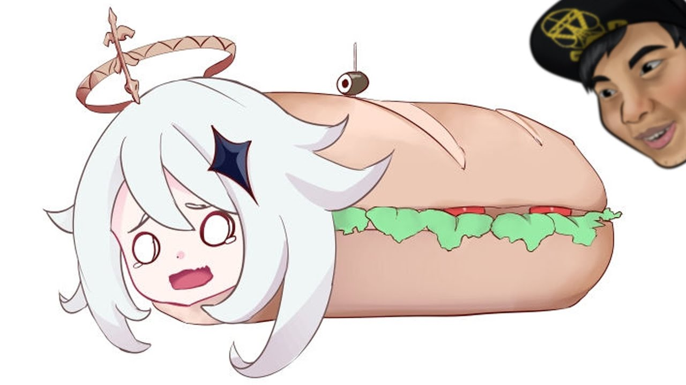

Genshin Impact

Genshin Impact - спросите, почему геньшин лучшая игра на свете? Пфффф, все очень просто! Она не самая лучшая игра на свете, я вобще не понимаю почему вы сдесь и читаете про эту «замечательную» в кавычках игру, лучше бы в Детх Стрендинг поиграли, изначално мы хотели сделать сайт по нему, но верстальщикам не захотелось словить спойлеры по ней, поэтому мы сейчас сдесь :)
В геншине вы можете играть за милфу или лолли, на этом её минусы не заканчиваются, дальше будет только лучше, в плане ГЕЙмплея, вы играете за четырёх наглухо отбитых героя, этих "несчастных вы находите по мере прогхождения сюжета, либо же выбивая из сундуков за некие, молитвы и нет, это не те молитвы которые в церкви, я проверил - я молился неделю и мне не выпала Барбара(самый сильный персонаж в Геньшине)"
Игровой процесс
Игровой процесс, оставляет желать лучшего, в игру вы состовляете команду из четырёх игроков, но кому это вобще нужно? Это не удобно, вместо того чтобы качать одного героя, как во всех хороших играх (можете посмотрет примеры на нашем сайте), вас заставляют качать сразу четверых. И ладно бы прокачка была понятной, не редко можно встретить игрока в геншин, который сидит перед большой таблицой экселя с калькулятором, высчитывающего по формулам из высшой математики, проценты крита, урона и прочей белеберды по игре.
Не смотря на то, что в игре сотни персонажей, ни у кого из нету КАСТОМИЗАЦИИ, даже малейшого аксесуара. Что касаеться самого геймплея, казалось бы что могло бы пойти не так, но у МИХУЁ (компания которая создала гейщит) получилось, ни один из игроков даже не читает диалоги персонажей, потому что она настолько длинная и однотипная что даже разработчики не читали что у них там написано.
Основной жанр игры, казалось бы это ммо рпгшка, но на самом деле это гребаная ГРИНДЕРКА, любой геньшинфаг назовет вам тысячи рецептоп блюд из игры со своими особенностями, иногда мне кажеться что хавчику МИХУЁ удилили больше внимания чем сюжету и диалогогм, потому что их все равно никто не читает